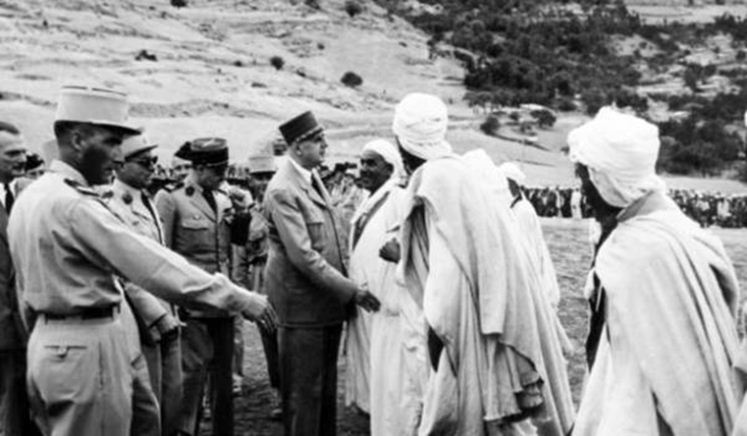

De Gaulle n’avait rien d’un xénophobe ou d’un raciste et sa politique de décolonisation l’illustre sans peine. En 1943, il avait ainsi créé un collège électoral unique en Algérie afin que le vote des Arabes pèse autant que celui des Pieds-Noirs, tout comme il avait obtenu que soit augmentée la proportion de Français musulmans dans les diverses Assemblées traitant des intérêts locaux. C’est encore lui qui avait exigé l’accueil de tous les petits musulmans dans les écoles de la République et lui enfin qui avait donné le droit de vote aux femmes arabes comme il l’avait accordé aux femmes françaises en a avril 1944. Néanmoins, comme l’écrit l’historien Benjamin Stora1, « il a sur l’islam le regard d’un homme pour qui l’histoire de la nation française est le produit de la civilisation chrétienne. La civilisation musulmane lui apparaît comme un corps étranger, inassimilable ». Sans doute que le général de Gaulle ne faisait justement pas l’amalgame, pour reprendre le mot des diffuseurs de la pensée unique, entre l’islam, qui lui semblait incompatible avec la société française et sa culture chrétienne ancestrale, et les musulmans qu’ils respectaient en tant qu’hommes et femmes et envers qui il n’oubliait pas de montrer sa sympathie.
Dès 1956, Charles de Gaulle est conscient d’une montée de l’islamisme et partage son inquiétude avec son ami de toujours André Malraux. Celui –ci rédige une analyse à l’intention du général qui ne permet pas de penser que nos hommes politiques actuels pouvaient ignorer la montée en puissance de cet islamisme revendicatif qu’ils ont pourtant encouragés et que, malgré tout, certains persistent à nier. Ainsi Malraux écrivait, il y a soixante ans :
« La nature d’une civilisation, c’est ce qui s’agrège autour d’une religion. Notre civilisation est incapable de construire un temple ou un tombeau. Elle sera contrainte de trouver sa valeur fondamentale, ou elle se décomposera.
C’est le grand phénomène de notre époque que la violence de la poussée islamique. Sous-estimée par la plupart de nos contemporains, cette montée de l’islam est analogiquement comparable aux débuts du communisme du temps de Lénine. Les conséquences de ce phénomène sont encore imprévisibles. A l’origine de la révolution marxiste, on croyait pouvoir endiguer le courant par des solutions partielles. Ni le christianisme, ni les organisations patronales ou ouvrières n’ont trouvé la réponse. De même aujourd’hui, le monde occidental ne semble guère préparé à affronter le problème de l’islam. En théorie, la solution paraît d’ailleurs extrêmement difficile. Peut-être serait-elle possible en pratique si, pour nous borner à l’aspect français de la question, celle-ci était pensée et appliquée par un véritable homme d’Etat. Les données actuelles du problème portent à croire que des formes variées de dictature musulmane vont s’établir successivement à travers le monde arabe. Quand je dis «musulmane» je pense moins aux structures religieuses qu’aux structures temporelles découlant de la doctrine de Mahomet. […] Peut-être des solutions partielles auraient-elles suffi à endiguer le courant de l’islam, si elles avaient été appliquées à temps. Actuellement, il est trop tard ! Les «misérables» ont d’ailleurs peu à perdre.
Ils préféreront conserver leur misère à l’intérieur d’une communauté musulmane. Leur sort sans doute restera inchangé. Nous avons d’eux une conception trop occidentale. Aux bienfaits que nous prétendons pouvoir leur apporter, ils préféreront l’avenir de leur race. L’Afrique noire ne restera pas longtemps insensible à ce processus. Tout ce que nous pouvons faire, c’est prendre conscience de la gravité du phénomène et tenter d’en retarder l’évolution. »
En mars 1959, soit deux mois après son installation à l’Elysée, de Gaulle livre le fond de sa pensée à Alain Peyrefitte2 sur ses craintes envers l’islam :
« C’est très bien qu’il y ait des Français jaunes, des Français noirs, des Français bruns. Ils montrent que la France est ouverte à toutes les races et qu’elle a une vocation universelle. Mais à condition qu’ils restent une petite minorité. Sinon, la France ne serait plus la France. Nous sommes quand même avant tout un peuple européen de race blanche, de culture grecque et latine et de religion chrétienne. »
Des propos repris récemment par la députée lorraine Nadine Morano qui lui ont valu les foudres de la presse et des socialistes mais peut-être plus encore de ceux qui se revendique héritier du gaullisme. Des propos qui d’ailleurs sont aujourd’hui remis en cause par l’historien Jean-Paul Bled, ancien président des Cercles universitaires d’études et de recherches gaulliennes : « Le général de Gaulle considérait qu’il n’y a que l’écrit qui pouvait engager sa personne. Or cette phrase a été prononcée à l’emporte-pièce dans une conversation privée mais il n’y a aucune trace écrite dans ses mémoires ou ses discours. Le général de Gaulle ne peut donc en être comptable. » Etonnante théorie : il ne l’a pas écrit donc… il ne l’a pas dit. L’explication « scientifique » de Monsieur Bled, servant l’intérêt général des diffuseurs de la pensée unique, sera rapidement reprise dans les médias3.
Comme l’écrit Gérard Bardy, un spécialiste de Charles de Gaulle, dans son dernier ouvrage « De Gaulle avait raison – le visionnaire » (lire l’encadré) : « Si la volonté de de Gaulle de permettre aux territoires africains de l’Empire de prendre leur envol a répondu à son souci de vois ces peuples s’émanciper, celle de « lâcher » l’Algérie a, très vraisemblablement, d’abord été dictée par la nécessité de mettre la France à l’abri de l’islam conquérant décrit par Malraux ».
Malgré les centaines de millions dilapidés par les gouvernements successifs depuis les années 80 dans la politique d’intégration, l’échec est consternant. Pourtant le général de Gaulle ne se faisait aucune illusion sur les chances de réussite d’une telle politique et, bien au contraire, mesurait déjà le danger de vouloir la mettre en œuvre :
« Ceux qui prônent l’intégration ont une cervelle de colibri, même s’ils sont très savants.
Essayez d’intégrer de l’huile et du vinaigre. Agitez la bouteille. Au bout d’un moment, ils se sépareront de nouveau. Les Arabes sont des Arabes, les Français sont des Français.
Vous croyez que le corps français peut absorber dix millions de musulmans, qui demain seront vingt millions et après-demain quarante ? Si nous faisions l’intégration, si tous les Arabes et les Berbères d’Algérie étaient considérés comme Français, comment les empêcherez-vous de venir s’installer en métropole, alors que le niveau de vie y est tellement plus élevé ?
Mon village ne s’appellerait plus Colombey-les-Deux-Églises, mais Colombey-les-Deux-Mosquées…4 »
Et d’ajouter quelques mois plus tard :
« L'intégration, c'est une entourloupe pour permettre que les musulmans qui sont majoritaires en Algérie à dix contre un, se retrouvent minoritaires dans la République française à un contre cinq. C'est un tour de passe-passe puéril! On s'imagine qu'on pourra prendre les Algériens avec cet attrape-couillons? Avez-vous songé que les Arabes se multiplieront par cinq, puis par dix, pendant que la population française restera presque stationnaire? Il y aurait deux cents, puis quatre cents députés arabes à Paris? Vous voyez un président arabe à l'Elysée ? »
Plusieurs de mes amis conservent une amertume certaine envers de Gaulle dans sa décision d’abandonner l’Algérie et pourtant, là encore, son choix a d’abord été l’intérêt supérieur de la nation et la protection de la France :
« On se rendra peut-être compte que le plus grand de tous les services que j’ai pu rendre au pays, ce fut de détacher l’Algérie de la France ; et que, de tous, c’est celui qui m’aura été le plus douloureux. Avec le recul, on comprendra que ce cancer allait nous emporter. On reconnaîtra que l’« intégration », la faculté donnée à dix millions d’Arabes, qui deviendraient vingt, puis quarante, de s’installer en France comme chez eux, c’était la fin de la France. »
Une fois encore, le général de Gaulle avait été terriblement visionnaire5. Malgré cela la France ne sera pas sauvée… et les millions d’algériens et de binationaux franco-algériens qui vivent aujourd’hui en France le démontrent.
En mai 1963, en plein Conseil des ministres, de Gaulle s’inquiète déjà du nombre d’immigrés musulmans :
« J’attire votre attention sur un problème qui pourrait devenir sérieux. Il y a eu 40 000 immigrants d’Algérie en avril. C’est presque égal au nombre des bébés nés en France pendant le même mois. J’aimerais qu’il naisse plus de bébés en France et qu’il y vienne moins d’immigrés. Vraiment, point trop n’en faut ! Il devient urgent d’y mettre bon ordre ! »
Malgré tout, ses héritiers, ou plus exactement ceux qui se réclament de son héritage, tout comme les socialistes qui vont lui succéder, vont tous prendre des décisions politiques qui vont bien contraire favoriser l’immigration, à l’instar de l’acquisition de la nationalité française en vertu du « droit du sol » et plus encore de la politique de rapprochement familial.
Comme le souligne Gérard Bardy : « tous ses actes antérieurs montrent que de Gaulle respectait l’islam comme l’une des grandes religions du Livre mais qu’il en connaissait le caractère fier et conquérant, cela bien avant que des mouvements terroristes, nés des courants les plus obscurantistes, n’engagent une guerre sainte, le jihad, contre la civilisation occidentale. C’est bien ce choc des cultures, des religions et des modes de vie qu’il avait prédit, dès le milieu des années 1950, y voyant déjà la source des violences qui plongent actuellement la France dans un état de guerre.»
Alors la France se meurt-elle malgré la clairvoyance et les actions préventives du Général ?
Qu’il me soit permis d’achever cet article sur une note d’espoir, sur les paroles du plus grand chef d’Etat qu’ait eu la France :
«Cette guerre n’est qu’un épisode d’un affrontement de peuples et de civilisations. Ce sera long mais j’ai confiance. Le dernier mot restera à la civilisation la plus élevée et la plus désintéressée : la nôtre, la civilisation chrétienne.6 ».
Ainsi soit-il…
F.M.
1« De Gaulle et l’Algérie », Editeur : Fayard/Pluriel.
4Cité par A. Peyrefitte. C’était de Gaulle. Éditions Gallimard, 2000. Propos tenus le 5 mars 1959.
5En 2015, l’Algérie recensait 40 millions d’Algériens.
6L’historien Eric Roussel rapporte dans son ouvrage « Charles de Gaulle » (Paris, Gallimard 2002), la crainte du d’un islam conquérant dont le Général fait part, dès 1940, au Père Bourgeon, aumônier de son régiment.
Partager cette page